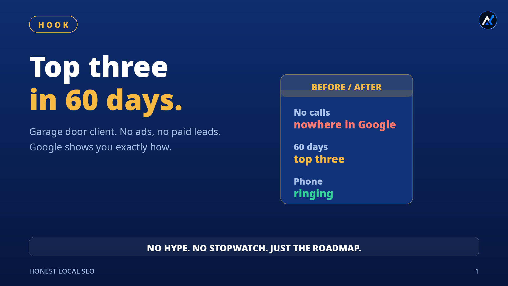
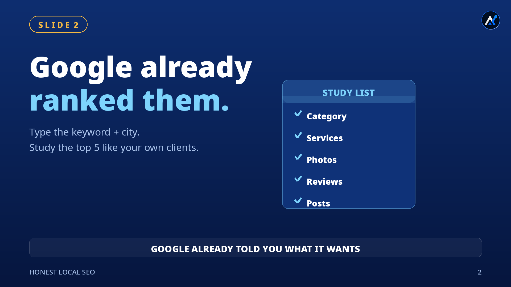
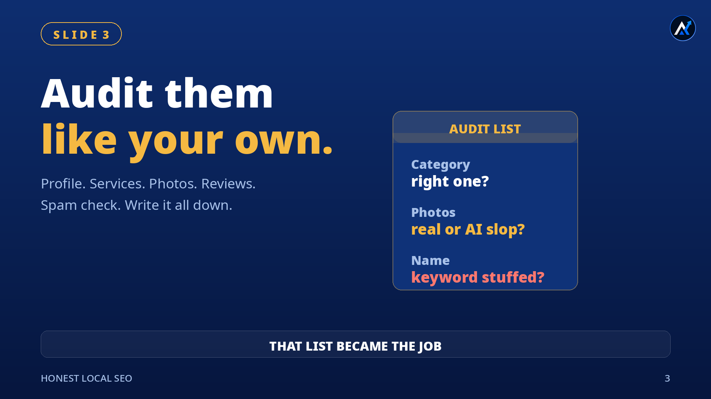
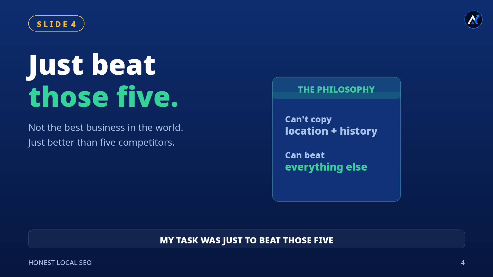
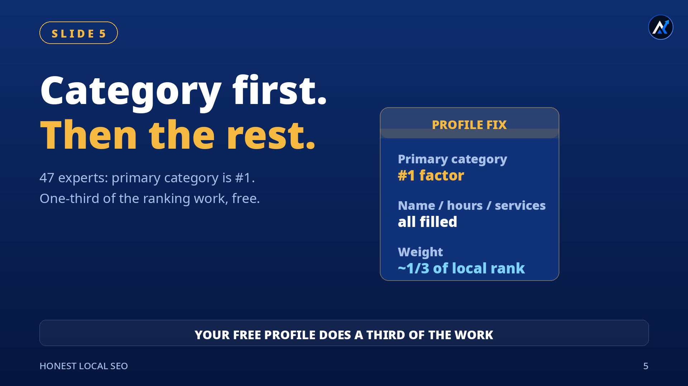
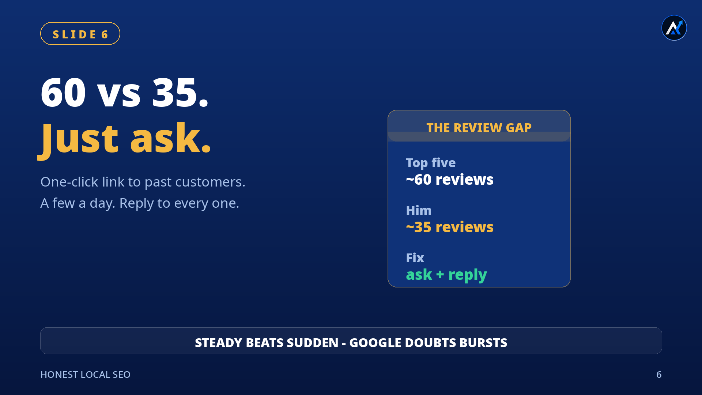
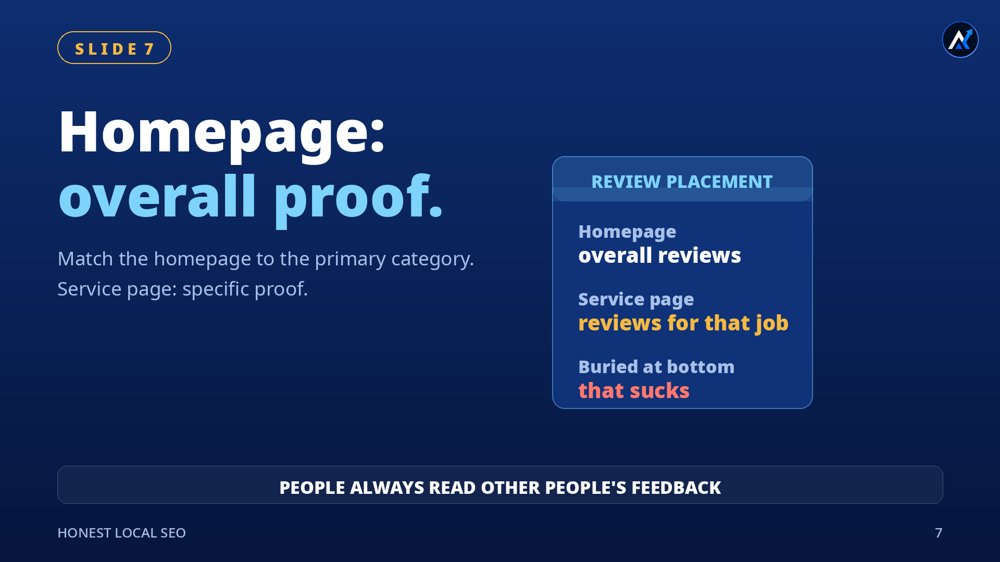
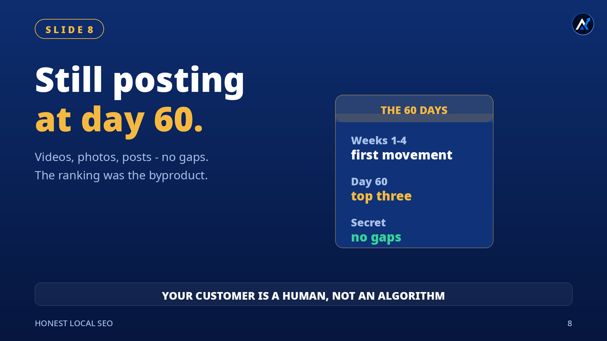

A garage door client came to me with no calls and no visibility in Google. Sixty days later he was in the top three of the map pack, phone ringing. This is everything I did — the full roadmap, in order.
1The 60-day result

When he came to me: no calls, and nowhere in Google. Sixty days later: top three in the map pack, phone ringing. No ads, no paid leads — all of it from local SEO.
And honestly, it wasn't complicated — because here's the thing nobody tells you: Google literally shows you exactly how. The businesses already ranking are a public blueprint. This playbook is just reading it, then out-executing it.
2Study the top 5

First step: I typed his main keyword and his city into Google and found the top 5. Then I studied them like they were my own clients — because Google already ranked them, which means Google already told me what it wants.
This is the highest-leverage hour in local SEO. Everything on the ranking page is public: their categories, their services, their photos, their review counts and velocity, how often they post. That becomes your target list.
3The audit

I asked one question: if these five were my clients, what would I do for them? Then I opened each profile, one by one, and audited everything — category, services vs website match, real photos vs AI slop, review count and velocity, posting frequency, and anything spammy like fake reviews or keywords stuffed into the business name.
I wrote it all down. That list became the job.
4Beat those five

My task was not to make my client the best business in the world. My task was just to beat those five. That's it.
An honest caveat: you can't copy their location, and you can't copy ten years of review history. But everything else — profile completeness, review velocity, content, consistency — that's all effort. Effort is the part you control.
5Fix the profile

The category is the single highest-weight factor in local search. Whitespark's 2025 study — 47 local SEO experts scoring 187 factors — put the primary category at number one, and Google Business Profile signals at roughly a third of map-pack weight. So I checked what the top five were using and picked the one matching his main money keyword — "garage door repair service," not something vague like "contractor."
One primary category, chosen carefully — secondaries can support it, but the primary does the heavy lifting. Then everything else: real business name with no keyword stuffing, full hours including holidays, every service with a real description, photos, the booking link. That free profile alone does about a third of the local ranking work.
6Close the review gap

Say the top five averaged around 60 reviews and he had around 35. The fix is embarrassingly simple: ask. Most happy customers will leave a review if you ask — businesses that ask get far more reviews than businesses that wait. He emailed past customers with a direct one-click link. Within a week, reviews started coming in — a few a day, steady.
Two details matter. First, steady beats sudden — fifty reviews overnight looks fake, and sudden bursts can trip Google's spam filters. Second, reply to every review, because the next customer reads your replies before they call.
7Fix the website

Two problems on his site. First, the homepage didn't match the primary category — and the homepage represents the whole business, so that mismatch confuses Google. I fixed the homepage to clearly match his main service.
Second, the reviews were buried at the bottom of the page. That sucks, because everyone reads reviews — before anyone calls, they want to know what other people said. So the reviews moved up: the homepage carries the overall reviews, and every service page carries reviews about that exact work.
Think about it: a man with a broken spring lands on the spring-repair page and immediately sees reviews from people who had the same problem. Before he finishes the page, he already believes these guys do this work — sometimes he just calls. The longer a customer waits and researches, the more likely he searches someone else. Clear direction wins: homepage, overall proof; service page, specific proof.
860 days of posting

Those 60 days weren't waiting — they were posting. Every single week: the team working, the real van pulling up to the site, before-and-after shots, even the funny moments. Short videos explaining why a problem happens and how it was fixed. Videos, photos, posts — no gaps.
Almost nobody ranks in 30 days. But the ones still posting at day 60 win. And here's the deeper truth this whole playbook rests on: you can fool Google for a month, but your customer is a human, not an algorithm. Real work, shown consistently, is what both of them end up trusting.
No hype.No stopwatch.Just the parts that work.
Sources
Every research claim in this video comes from a named source:
- Search Engine Journal — Google's local ranking factors — local results are based primarily on relevance, distance, and prominence; more reviews and positive ratings can improve local ranking.
- Cube Creative — Whitespark 2025 local search ranking factors — 47 experts, 187 factors: GBP signals ~32%, reviews ~20%, primary category the top individual factor.
- Street Fight — Whitespark 2025 breakdown — secondary coverage confirming the factor weights.
- Google Search Essentials — spam policies — scaled content abuse: creating large amounts of unoriginal content to manipulate rankings, regardless of how it's produced.
- Cited.so — Google Maps ranking factors — steady review velocity outranks sudden bursts; businesses that ask generate far more reviews.
- DesignLoud — HVAC SEO case study — dedicated location pages with unique local content: #3–5 rankings in 8 cities within 8 weeks, 185% traffic growth (practitioner report).
A note on what's real
This is a practitioner case study, not a research paper. The client, the 60 days, the top-three result, and the method are real. The review counts in section 6 are illustrative "let's say" figures. The Whitespark figures are via secondary coverage of the 2025 report. What's hype-free here by design: no ranking-time guarantees, no bulk-citation magic, no bought reviews.